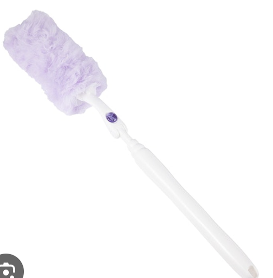
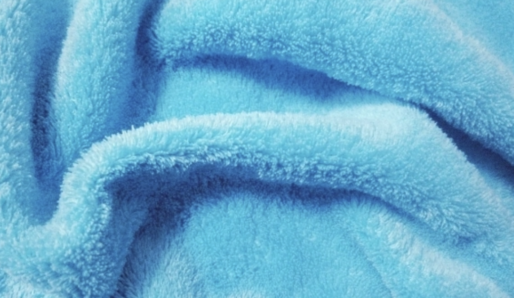
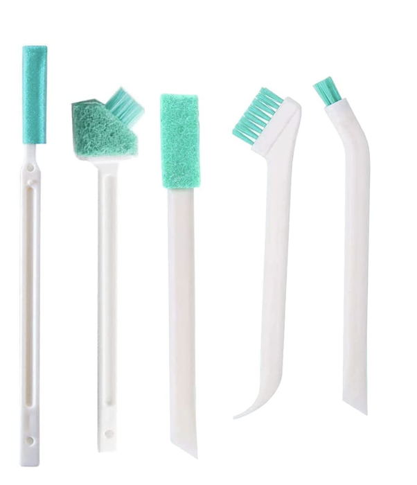

使用している道具
厳格な品質基準をクリアした日本の製品のみを使用

日本の洗剤
環境に優しく、効果的な日本の洗剤を使用。厳格な品質基準をクリアした製品のみを使用しています。お客様とご家族、ペットにも安全です。

日本製清掃用具
高品質な日本製の清掃用具を使用。細部まで丁寧に清掃できる、プロフェッショナルグレードの道具です。耐久性も高く、長く使用できます。

ハンドモップ
床の清掃に使用するハンドモップ。細かい部分まで丁寧に清掃できます。環境に優しい素材を使用しています。

マイクロファイバークロス
極細繊維のマイクロファイバークロスで、傷をつけずに汚れを除去。水だけでも高い清掃効果を発揮します。化学薬品の使用を最小限に抑えます。

専用ブラシ
隙間や細かい部分用の専用ブラシ。手の届きにくい場所も徹底的に清掃します。様々なサイズと形状のブラシを用意しています。

養生用品
作業中の保護用品。家具や床を傷つけないよう、丁寧に養生してから作業を行います。お客様の大切な財産を守ります。